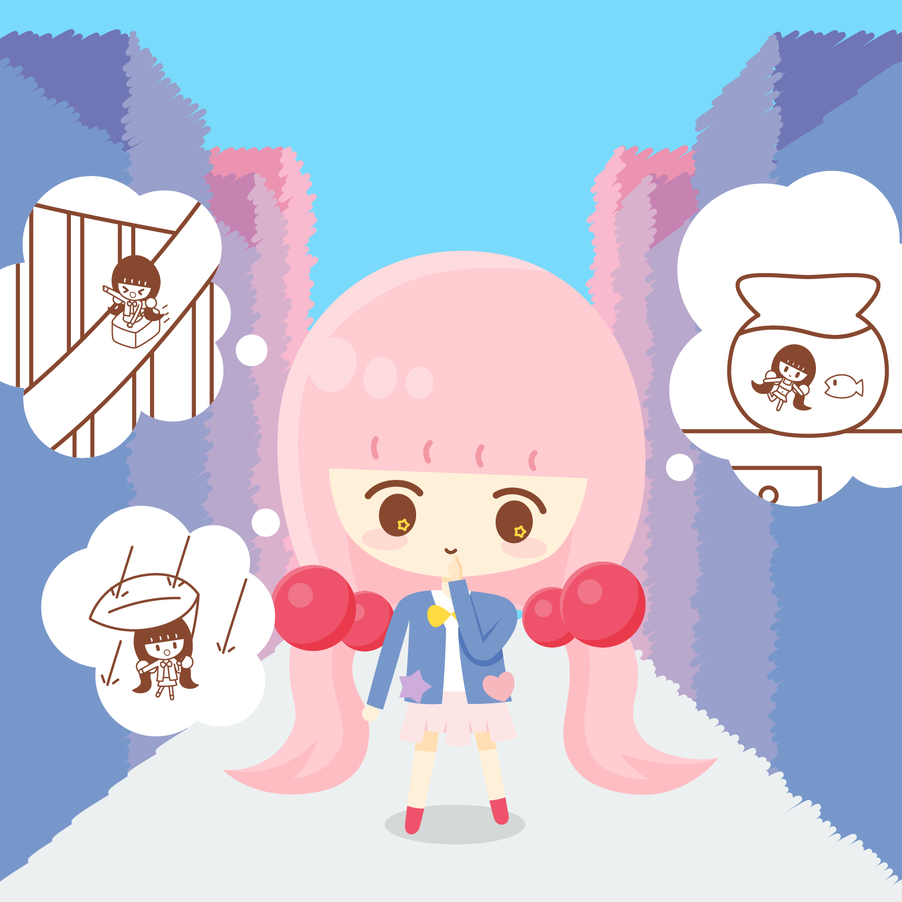
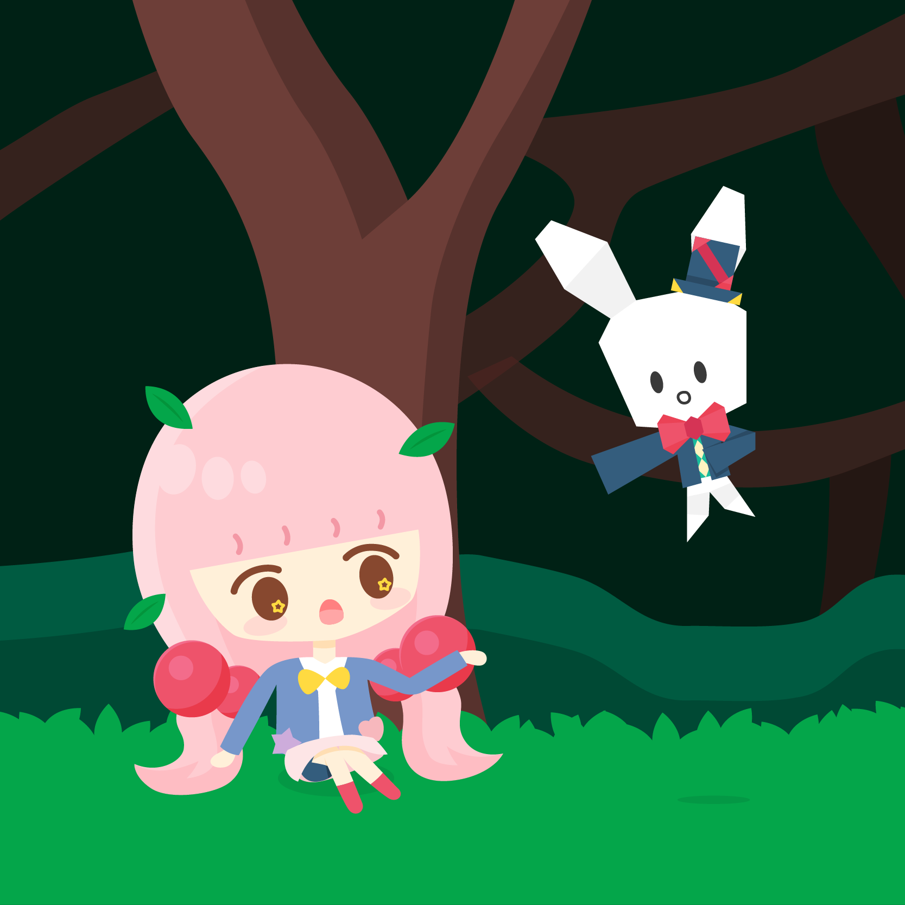
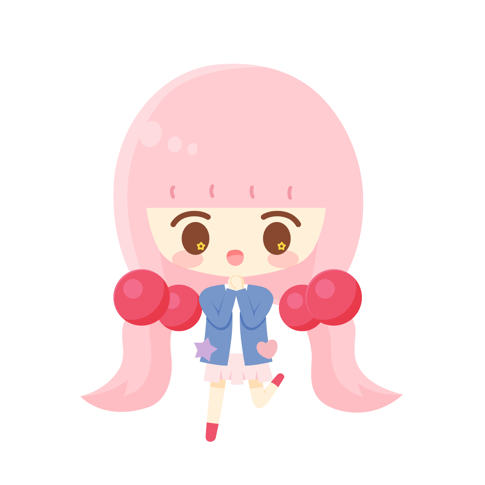
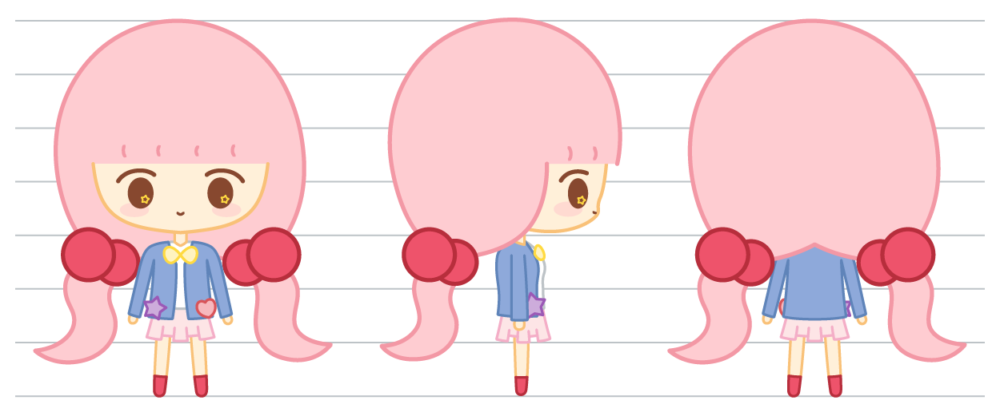
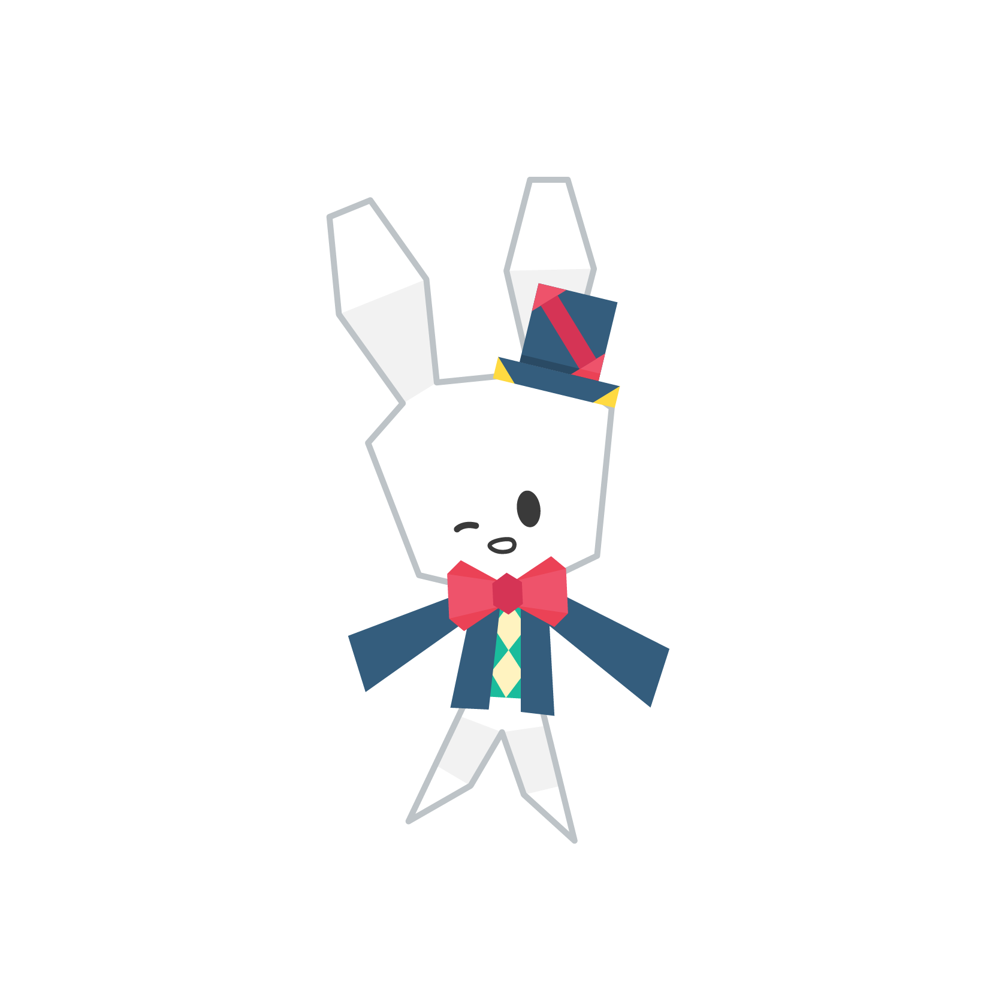
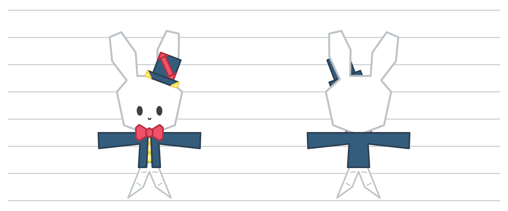
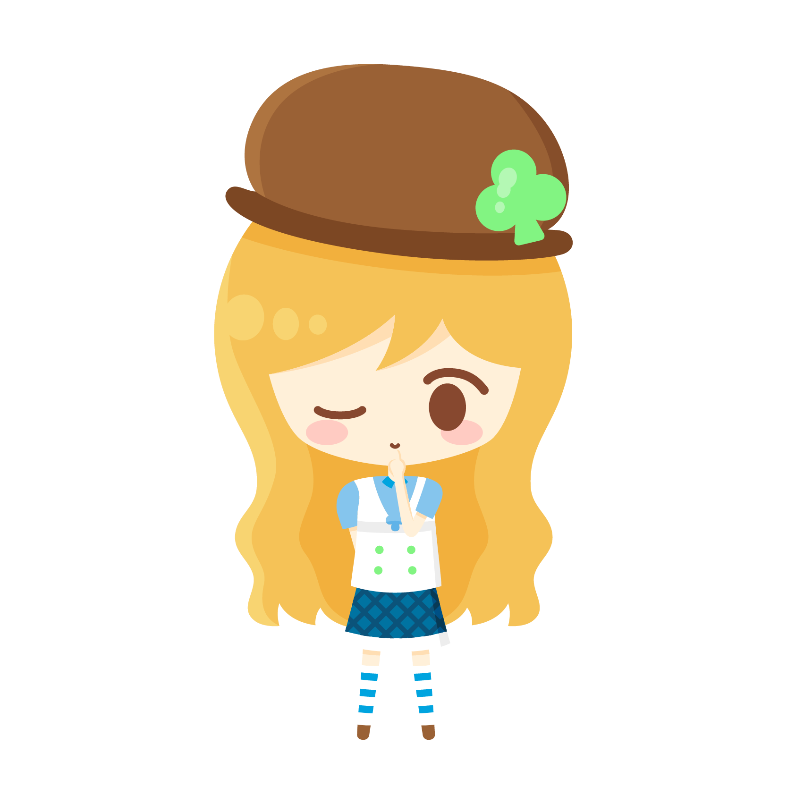
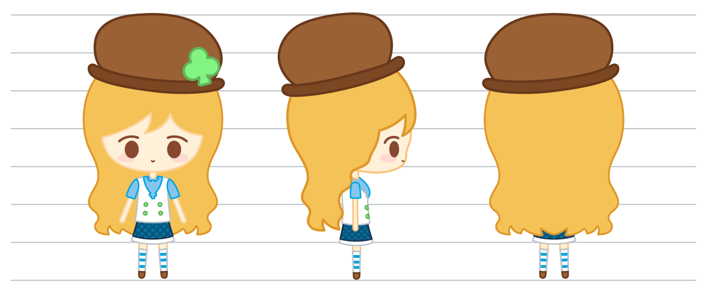
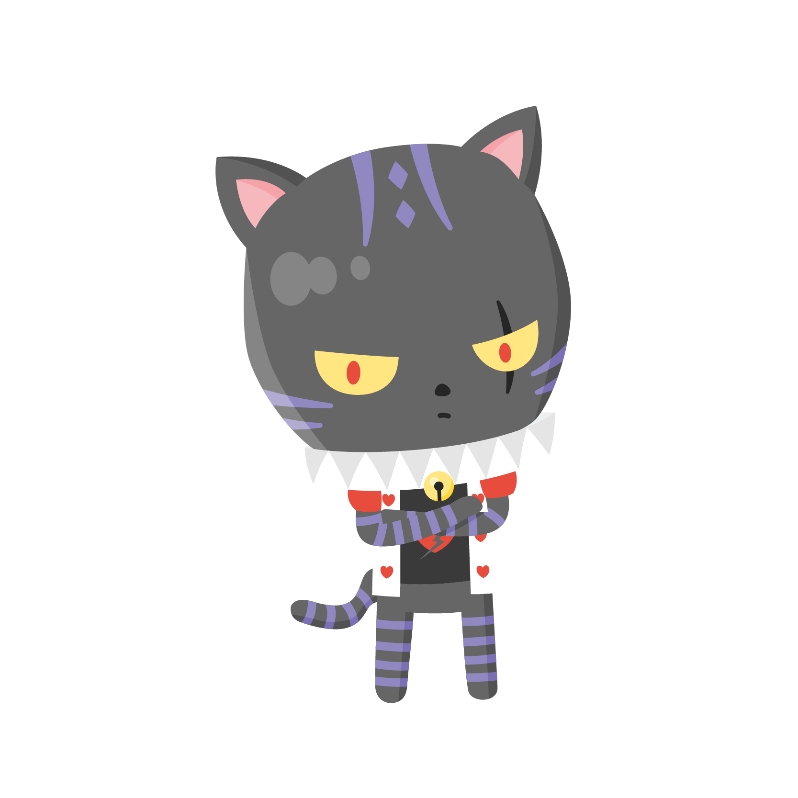
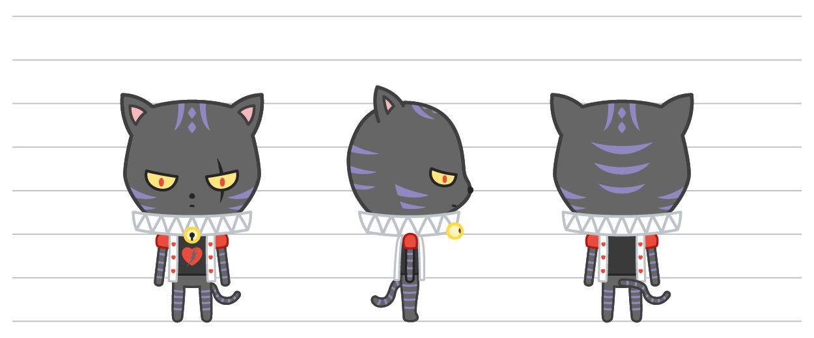

.png)
브랜드 소개
작은 세상으로 놀러와!
어느 날, 바람에 날려간 종이토끼를 따라간 콜레타.
나무 구멍 아래에서 마치와 만난 이후로 콜레타의 세상은 신나는 놀이터가 되었어요!
모험을 좋아하고 언제나 활기찬 콜레타, 크기를 자유롭게 조절할 수 있는 특별한 종이토끼 마치,
과거를 그리워하는 수수께끼 아가씨 리들, 심술궂고 고집 센 고양이 클론다이크까지.
때로는 조그맣고, 때로는 커다란 세상에서 함께 웃고 뛰놀며 콜레타와 친구들의 반짝이는 일상이 지금, 펼쳐집니다.

기획 의도
우리는 누구나 엉뚱한 상상을 해 본 적이 있다.
난간에서 롤러코스터를 탄다면? 소나기가 내리는 날, 나뭇잎을 쓰고 집에 간다면? 무더운 여름날, 어항에서 수영을 한다면?
하지만, 현실의 가혹함은 상상하는 것조차 방해한다.
끝없이 밀려오는 공부, 과제, 회사에서의 업무 등등으로 인해 우리는 상상할 시간조차 빼앗기고 있다.
각박한 세상 속에서, 어린 시절에 상상했던 조그마한, 환상적인 이야기를 다시 되돌려줄 수만 있다면.
콜레타의 이야기는 그러한 소망에서 시작되었다.
이 이야기는 우리가 한번쯤은 상상해 본 "내가 작아진다면?"이라는 모티브에서 출발했다.
현실 세계를 기반으로 하지만, 커다란 세계에서는 겪어볼 수 없는, 동화같고 즐거운 이야기를 보여주고자 하였다.
이 작은 이야기를 통해, 현실의 수레바퀴에서 벗어나,
마음 한 켠에 박아둔 자신만의 작은 이야기를 다시금 떠올려보는 시간이 되었으면 좋겠다.

시놉시스
콜레타는 뛰어노는 걸 좋아하는 평범한 여자아이! 하지만 콜레타의 친구는 하나같이 바뻐서 콜레타와 놀아주지 못합니다.
오늘도 빈 놀이터를 보며 한숨을 쉬는 콜레타. 그날 밤, 콜레타는 종이토끼 인형을 접고,
자기 직전 종이토끼 인형을 들고 이런 소원을 빕니다.
같이 놀 수 있는 친구와 놀이터가 있다면.
다음 날 아침, 학교에서 돌아온 콜레타는 어제 접었던 종이토끼가 사라져 있음을 알게 됩니다. 콜레타는 집 밖을 돌아다니며 종이토끼를 찾다, 우연히 바람에 날리는 종이토끼와 비슷한 것을 보게 됩니다. 콜레타는 그 종이토끼를 쫓다 나무동굴로 들어간 것을 보게 되고, 그것을 잡으려고 구멍에 손을 뻗는 그 순간. 나무구멍 안으로 들어오면서 말하는 종이토끼, 마치를 만나게 됩니다. 크기를 조절할 수 있는 능력이 있다는 마치. 마치는 자신의 능력으로 지금까지 보지 못한 새로운 세계를 보여 주고, 거기에서 뛰놀며 콜레타와 마치는 빠르게 친해지게 됩니다. 이렇게, 콜레타와 마치의, 하루하루가 즐거운 반짝이는 이야기가 시작됩니다.

콜레타
"내일은 어디로 가서 놀까?"
콜레타는 벛꽃색 양갈래 머리에 파란 재킷이 특징인 여자아이에요!
언제나 활기차고, 밝은 성격을 가지고 있어서 친구가 많아요.
노는 것을 세상에서 제일 좋아하지만, 학원 때문에 바쁜 친구들은 콜레타와 같이 놀지 못했어요.
하지만, 마치와 만난 이후로 콜레타의 일상은 하루하루가 즐거워지기 시작합니다.
새로운 것과 모험을 가장 좋아한답니다.
턴어라운드


마치
"작은 세상도 재밌지?"
마치는 콜레타가 접은 종이토끼 인형에서 만들어진 친구에요!
친구들의 크기를 마음대로 바꿀 수 있는 능력이 있어서, 매일 콜레타에게 새로운 세계를 보여줍니다.
개구쟁이같은 성격을 갖고 있지만, 의외로 책임감이 있는 멋진 친구랍니다.
귀여운 것을 좋아하지만, 물은 싫어한답니다.
턴어라운드


리들
"자, 그럼 그 앨리스는 어떻게 되었을까?"
금발에 파란 치마 때문에 종종 "선배 앨리스"라고 불리는 리들.
하지만 사실은 20년 전에 이상한 나라에 들어간 적이 있는 진짜 앨리스였답니다.
차분하고 어른스러워서, 콜레타의 동경을 많이 받지만, 은근히 장난치기를 좋아한답니다.
가끔 20년 전의 이상한 나라를 그리워합니다.
물음으로 끝내는 말버릇이 특징.
턴어라운드


클론다이크
"저 녀석을 당장 할퀴어버려!"
정원의 골목대장 고양이, 클론다이크.
오른쪽 눈에 난 상처와 트럼프 카드 모양의 옷이 특징입니다.
정원 속 세상을 자신의 왕국으로 여기며 멋대로 지배하고 있습니다.
그러던 도중, 콜레타와 마치가 클론다이크의 정원으로 찾아오자, 클론다이크는 콜레타와 마치를 눈엣가시처럼 바라보기 시작합니다.
오늘도 클론다이크는 콜레타와 마치를 내쫓기 위해 궁리를 하고 있습니다.
하지만 그런 클론다이크에게도 슬픈 사연이?
턴어라운드
